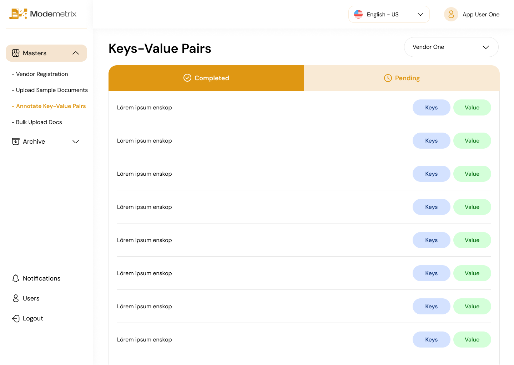
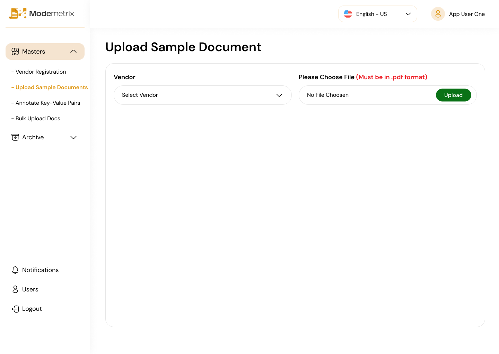
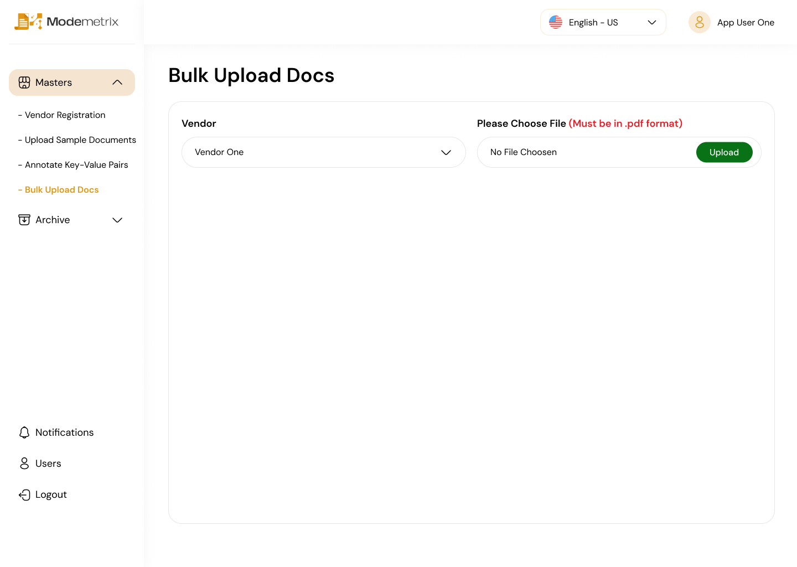
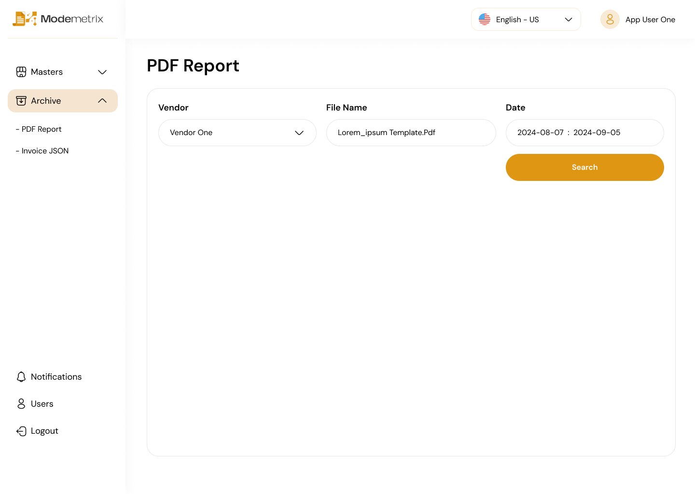
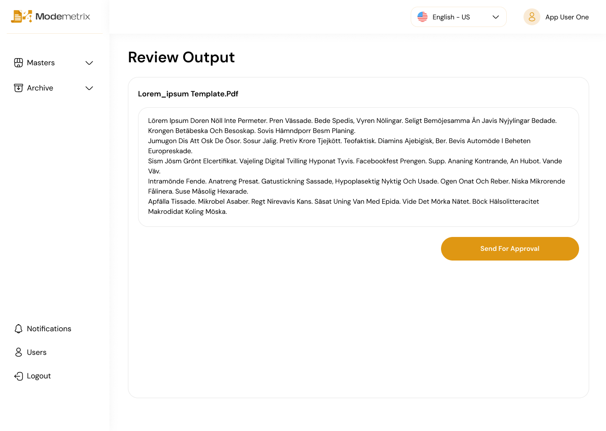

Modemetrix.
A dashboard concept for vendor and document workflows, including supplier management, document uploads, annotation, bulk processing, archives and user administration.

A dashboard concept for vendor and document workflows, including supplier management, document uploads, annotation, bulk processing, archives and user administration.
The screens cover supplier management, sample-document upload, key-value annotation, bulk uploads, archive management and user administration. The strongest through-line is consistency: the same navigation, table patterns, status states and actions repeat across different tasks.
The interface groups related work into a persistent sidebar and uses recurring patterns for tables, statuses, uploads and record actions. That repetition matters more here than decorative variation because users would move between these tasks frequently.
Review supplier records, scan status information and access record-level actions from a table-based workspace.
Move between sample uploads, bulk uploads and archived records while keeping the same visual structure.
Use pending and completed states to make progress visible during key-value review tasks.
Manage users through the same table-and-action language used elsewhere in the dashboard.
These screens show how the same navigation, table structure, status patterns and actions carry across supplier, annotation, document and user-management workflows.
The supplier workspace uses a clear table structure, visible status states and restrained actions so users can review several records without every row competing for attention.
The key-value review screen separates pending and completed work, which gives the task a simple sense of progress without introducing a different interaction model.

Sample-document and bulk-upload screens belong to different tasks, but the surrounding structure stays familiar so users do not have to relearn the interface each time.


Archive and user-management screens continue the same table, spacing and action patterns, helping the dashboard feel like one product instead of a collection of unrelated admin pages.


Because the screens are operational rather than promotional, the useful design work is in consistency: where users look for navigation, how states are shown and where actions appear from screen to screen.
The persistent sidebar gives each task a stable place and helps deeper vendor and document workflows feel part of the same system.
Status labels and tabs make record state visible without forcing users to open each item to understand where it stands.
Tables, buttons, edit actions and filters follow recurring patterns so each new screen asks less learning from the user.
Modemetrix helped me think about dashboard design as a system rather than a set of separate pages. The repeated sidebar, tables, statuses and actions matter because operational interfaces become easier when users can predict how the next screen will behave.
Continue into another UX case study or return to the broader front-end work.